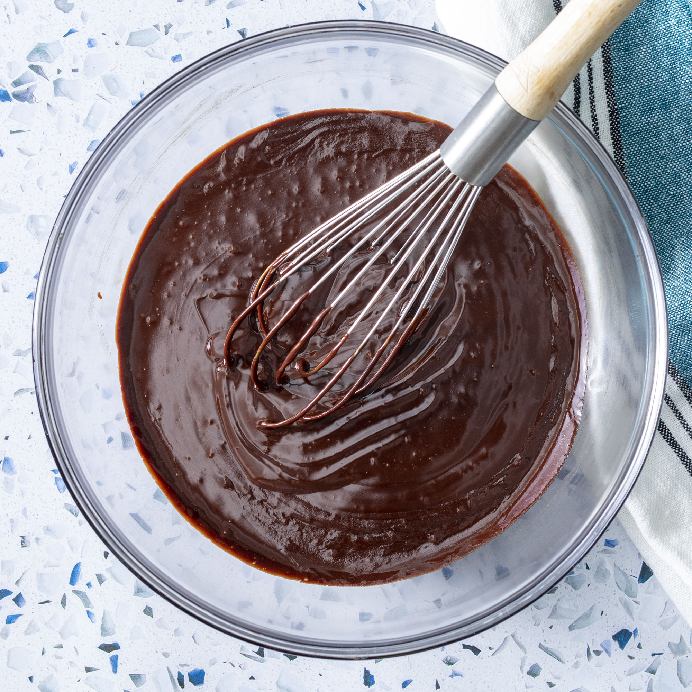

Chocolate Ganache

Description
Chocolate ganache is a mixture of cream and chocolate that has lots of uses with homemade baked goods.
Perfect for cakes, truffles, and pastries, this deliciously rich topping can be used as a filling, frosting, or glaze.
Ganache was reportedly created in 1869 by Parisian playwright and confectioner Paul Siraudin,
who is said to have named it after a popular Vaudevillian comedy called Les Ganaches.
Ingredients
- 9 ounces bittersweet chocolate, roughly chopped (or chocolate chips)
- 1 cup heavy cream
Steps
- Place chocolate in a medium mixing bowl.
- Heat cream in a small saucepan over medium heat. Bring just to a boil, watching very carefully because if it boils for even a few seconds, it will boil out of the pot.
- As soon as the cream comes to a boil, pour it over the chocolate in the mixing bowl. Whisk until chocolate has melted and mixture is smooth.
- Stir the ganache until the cream and the chocolate are fully combined.